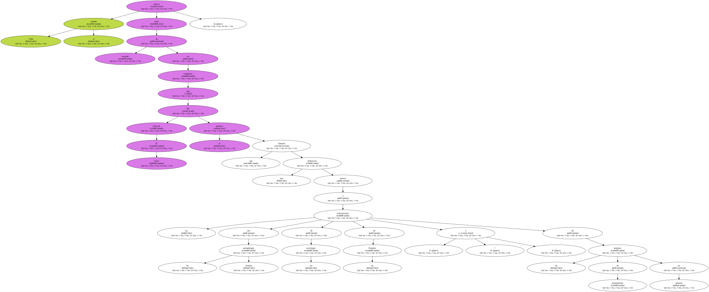
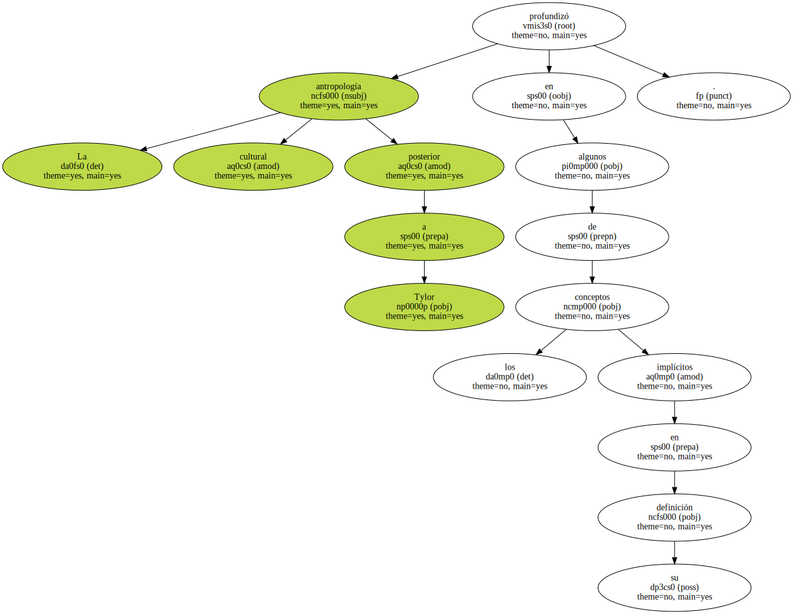
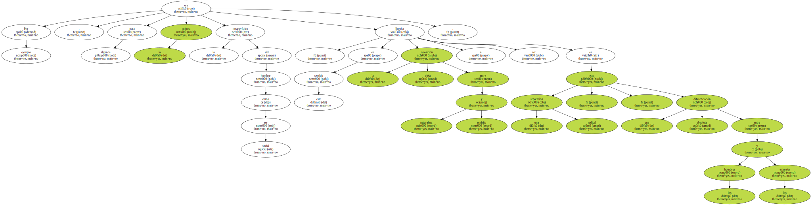
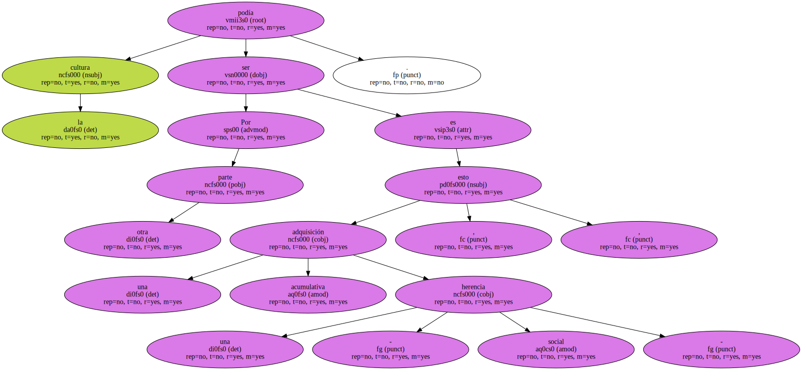
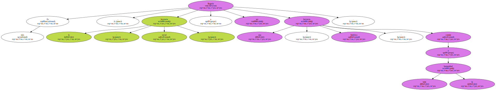
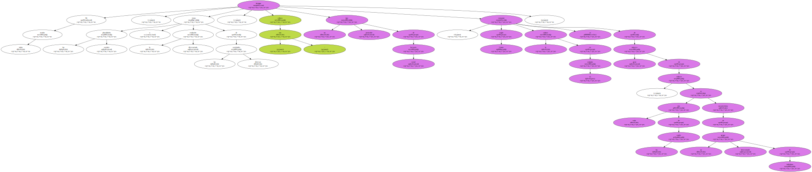
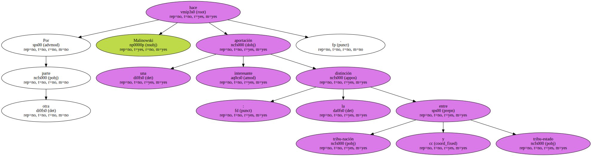
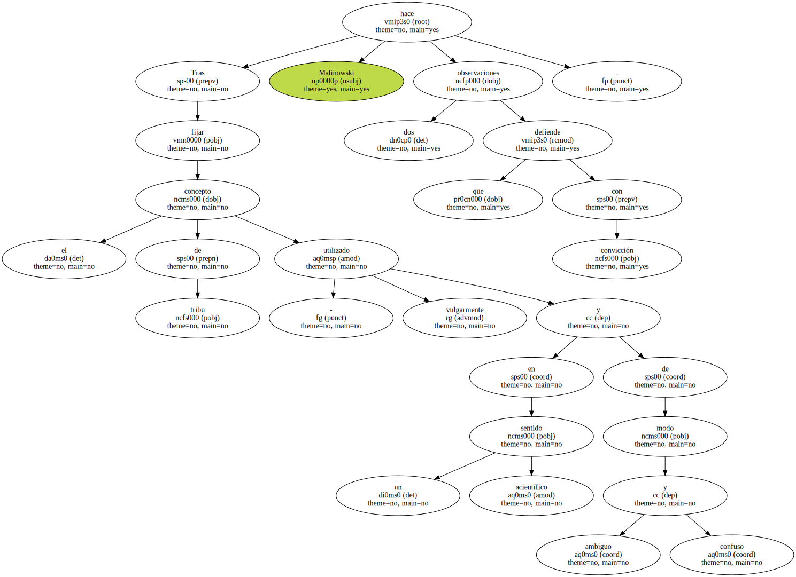
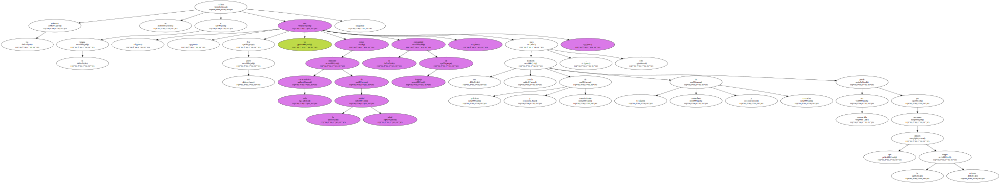
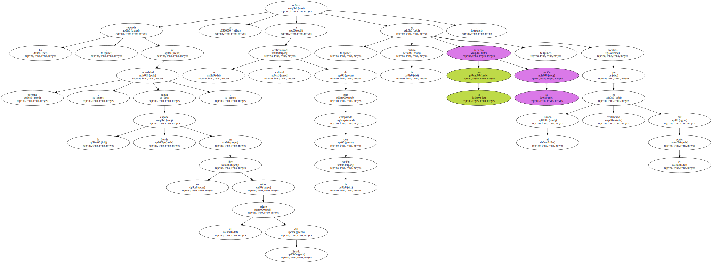

Todo el mundo parece estar de acuerdo en considerar que fue Edward B. Tylor el primero que formuló una definición abierta a las concepciones con los antropólogos mismos , de los sociólogos ? , de los filósofos o de los hombres de pensamiento en general.
La antropología cultural posterior a Tylor profundizó en algunos de los conceptos implícitos en su definición , que se amplió o restringió según los autores o las escuelas.
Por ejemplo , para algunos la cultura era la característica del hombre como ser social : en este sentido la vieja oposición entre naturaleza y espíritu llegaba a ser una separación radical , esto es , una diferenciación absoluta entre los hombres y los animales.
Por otra parte la cultura podía ser una adquisición acumulativa , esto es , una - herencia social -.
Es más , la - herencia social - llegaría a ser una - herencia histórica - común a toda la humanidad.
De todos modos , vistas las pluralidades sociales y la evolución diferenciada de las diversas sociedades , - una - cultura designa un tipo particular de herencia social : según Linton la cultura en su conjunto se compone de gran número de culturas , cada una de las cuales es característica de un grupo determinado de individuos.
Así pues , la investigación antropológica , tan fecunda en el presente siglo , ha permitido al mismo tiempo el análisis del concepto de civilización como totalidad y el establecimiento de comparaciones entre las configuraciones culturales propias de cada sociedad hasta reencontrar una - personalidad de base - ( Margaret Mead ).

Por otra parte Malinowski hace una interesante aportación : la distinción entre tribu-nación y tribu-estado.
Tras fijar el concepto de tribu - utilizado vulgarmente en un sentido acientífico y de modo ambiguo y confuso Malinowski hace dos observaciones que defiende con convicción.
La primera se refiere a la lengua : - Por mi parte yo veo como indicador más característico de la unidad tribal la comunidad de lenguaje , pues una tradición común de prácticas y conocimientos , de costumbres y creencias , sólo puede ser compartida por personas que utilicen la misma lengua -.
La segunda , de perenne actualidad , según la expone Lowie en su libro sobre el origen del Estado , se refiere a la artificiosidad cultural de éste comparado con la nación : es la cultura lo que vertebra la nación , mientras que el Estado es vertebrado por el poder.
